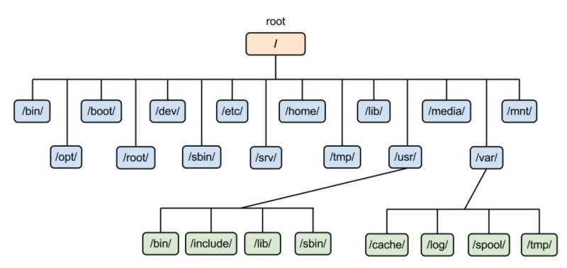
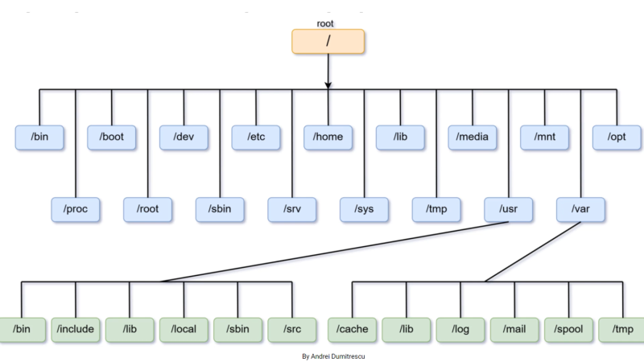

A file system controls how data is stored and retrieved.
All data stored in a disk is just a large chunk of 1s and 0s. We don't know where something inside a file begins or ends, we cannot determine what data is what.
A file is structured group of data. The structure and the logic rules used to manage files and names is known as a file structure.
File structure basically determines how to store files and how to perform common operations like read, delete, copy etc.
In Linux everything is a file, that includes directories(directories are special type of files) , processed and hardware devices(disks,external USBs etc.).
Linux follows an hierarchial file system which is like a reverse tree.


Each major directory under /(root) has a specific function :
/bin : Contains binaries or user executable files available to all users like ls,cp etc.
/sbin : Contains binaries that only super user can execute(system admin uses) eg ifconfig.
/boot : Contains files required to start your system.
/home : This is where all files of the users are stored. There can be a subdirectory with name of user if that user has its own home directory.
/root : Home directory of root user.
/dev : Contains device files mainly generated during boot time.
/etc : Contains most of the system wide configuration files.
/tmp : Stores temporary files used by different applications. Files stored here can be deleted anytime without any prior notice.
/proc : It is a virtual directory. It contains info about computer's hardware like RAM,CPU or Kernel. The files here are generate during booting or on the fly when something changes on the system.
/run : Relatively new directory. It is a temporary file system which runs on RAM.
/sys : Contains data about system, hardware and other stuff, not accessed directly.
/srv : Contains info about server.
/lib : Contains shared library files used by many applications.
/media : Used for external devices, mounted automatically nowadays.
/usr : Earlier it was used as user's root directory now in some distributions it contains binaries instead of /bin like in CentOS.
/mnt : This is like /media but is not used that much nowadays.
Linux file system even treats partitions as a file.
External USB storage devices are treated as a different file system in linux so to access files from the usb we have to mount the drive to the file system. Nowadays mounting is done automatically.